리눅스마스터-2급 (2021-09-11 기출문제)
1과목: 리눅스 운영 및 관리
1. 다음중 프린터 큐의 상태를 출력하는 명령으로 알맞은 것은?
- lp
- lpr
- lpc
- lpstat
(정답률: 78%)

2. 다음 중 스캐너 관련 프로그램으로 알맞은 것은?
- CUPS
- ALSA
- OSS
- SANE
(정답률: 87%)
3. 다음 설명에 해당하는 LVM 관련 용어로 알맞은 것은?
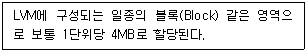
- PV
- VG
- LV
- PE
(정답률: 54%)
4. 다음 그림은 CentOS 7에서 프린터를 설정하기 위해 관련 프로그램을 실행한 것이다. 해당 프로그램을 실행하기 위한 명령으로 알맞은 것은?
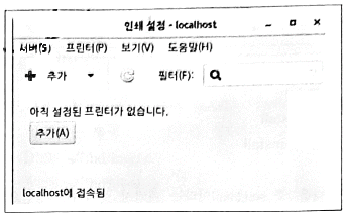
- printconf
- printtool
- system-config-printer
- redhat-config-printer
(정답률: 88%)
5. 다음 설명에 해당하는 용어로 알맞은 것은?
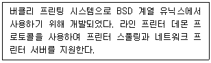
- CUPS
- LPRng
- SANE
- ALSA
(정답률: 76%)
6. 다음 설명에 해당하는 RAID의 종류로 알맞은 것은?
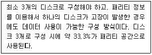
- RAID-0
- RAID-1
- RAID-5
- RAID-6
(정답률: 78%)
7. 다음은 yum 명령을 이용해서 telnet-server 패키지를 설치하는 과정이다. ( 괄호 ) 안에 들어갈 내용으로 알맞은 것은?
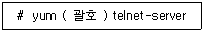
- -i
- -y
- install
- --install
(정답률: 82%)
8. 다음 중 sendmail이라는 패키지 설치하는 명령으로 알맞은 것은?
- rpm –e sendmail-8.14.7-6.el7.x86_64.rpm
- rpm –u sendmail-8.14.7-6.el7.x86_64.rpm
- rpm –U sendmail-8.14.7-6.el7.x86_64.rpm
- rpm –V sendmail-8.14.7-6.el7.x86_64.rpm
(정답률: 61%)
9. 다음 중 compress 명령으로 생성되는 압축 파일명으로 알맞은 것은?
- php-8.0.3.tar.Z
- php-8.0.3.tar.xz
- php-8.0.3.tar.gz
- php-8.0.3.tar.bz2
(정답률: 71%)
10. 다음은 다운로드 받은 rpm 패키지 파일에 대한 정보를 확인하는 과정이다. ( 괄호 ) 안에 들어갈 내용으로 알맞은 것은?
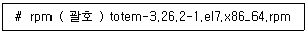
- -qif
- -qip
- -qiv
- -qiF
(정답률: 47%)
11. 다음은 backup.tar 파일의 내용을 확인하는 과정이다. ( 괄호 ) 안에 들어갈 내용으로 알맞은 것은?
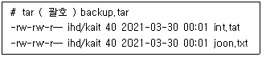
- cvf
- xvf
- rvf
- tvf
(정답률: 63%)
12. 다음 ( 괄호 ) 안에 들어갈 내용으로 알맞은 것은?
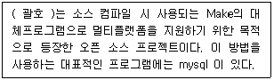
- make
- cmake
- configure
- dnf
(정답률: 77%)
13. 다음 중 온라인 패키지 관리 도구로 가장 거리가 먼 것은?
- YaST
- yum
- apt-get
- zypper
(정답률: 67%)
14. 다음 중 소스 컴파일 단계에서 configure 작업 후에 생성되는 파일로 알맞은 것은?
- .config
- config.h
- configure.h
- Makefile
(정답률: 84%)
15. 다음 중 vim(vi improved)를 개발한 인물로 알맞은 것은?
- 리처드 스톨먼
- 제임스 고슬링
- 아보일 카사르
- 브람 무레나르
(정답률: 75%)
16. 다음 설명에 해당하는 편집기로 알맞은 것은?
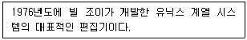
- vi
- emacs
- gedit
- pico
(정답률: 80%)
17. vi 편집기 사용 중 비정상적인 종료로 인해 작업이 중단되었다. 다음 중 생성된 스왑 파일 목록을 확인하는 방법으로 알맞은 것은?
- vi +
- vi -r
- vi -R
- vi –s
(정답률: 59%)
18. 다음 설명과 같은 경우 유용한 vi 편집기의 환경설정 값으로 알맞은 것은?
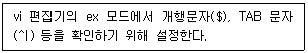
- set ai
- set ic
- set sm
- set list
(정답률: 47%)
19. 다음 중 nano 편집기에서 프로그램을 종료하는 조합으로 알맞은 것은?
- [Ctrl]+[a]
- [Ctrl]+[e]
- [Ctrl]+[c]
- [Ctrl]+[x]
(정답률: 63%)
20. 다음 중 vi 편집기에서 ihd라는 단어를 kait로 치환하는 명령으로 알맞은 것은?
- :% s/^ihd/kait/g
- :% s/^ihd$/kait/g
- :% s/<ihd>/kait/g
- :% s/∖<ihd∖>/kait/g
(정답률: 47%)
21. 다음 중 프로세스에 전송되는 시그널명과 시그널 번호를 확인할 때 사용하는 명령으로 알맞은 것은?
- ps
- kill
- stat
- signals
(정답률: 58%)
22. 다음 중 SIGTERM의 시그널 번호로 알맞은 것은?
- 1
- 9
- 15
- 20
(정답률: 68%)
23. 실행중인 모든 프로세서를 확인하기 위해 사용하는 ps 명령 옵션으로 알맞은 것은?
- ef
- -a
- aux
- -f
(정답률: 59%)
24. 다음 상황과 가장 관련 있는 용어로 알맞은 것은?
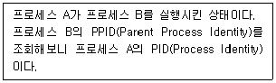
- fork
- exec
- signal
- daemon
(정답률: 70%)
25. 다음 ( 괄호 ) 안에 들어갈 내용으로 가장 알맞은 것은?
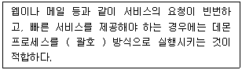
- init
- inetd
- xinetd
- standalone
(정답률: 69%)
26. 프로세스 아이디(Process Indentity)가 1222번인 프로세스를 강제 종료하려고 한다. 다음 ( 괄호 ) 안에 들어갈 내용으로 알맞은 것은?
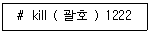
- -1
- -9
- -15
- -20
(정답률: 83%)
27. 다음 중 우선순위 변경 명령으로 설정할 수 있는 NI 값의 범위로 알맞은 것은?
- -19 ~ 20
- -19 ~ 19
- -20 ~ 19
- -20 ~ 20
(정답률: 77%)
28. 다음 중 현재 로그인에서 사용 중인 셸의 우선 순위 항목값인 NI 및 PRI 값을 확인할 때 사용하는 명령으로 알맞은 것은?
- nice
- renice
- ps
- kill
(정답률: 54%)
29. 다음 중 cron을 이용해서 매주 월요일부터 금요일까지 오후 12시에 백업 스크립트를 실행하려고 할 때 ( 괄호 ) 안에 들어갈 내용으로 알맞은 것은?
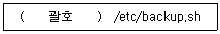
- 12 0 * * 1-5
- 0 12 * * 1-5
- 12 0 * 1-5 *
- 0 12 * 1-5 *
(정답률: 80%)
30. 다음 ( 괄호 ) 안에 들어갈 내용으로 알맞은 것은?
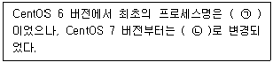
- ㉠ init, ㉡ systemd
- ㉠ inetd, ㉡ systemd
- ㉠ systemd, ㉡ init
- ㉠ systemd, ㉡ inetd
(정답률: 62%)
31. 다음은 chsh 명령의 사용법을 확인하는 과정이다. ( 괄호 ) 안에 들어갈 옵션으로 알맞은 것은?
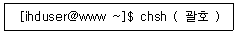
- -c
- -l
- -s
- -u
(정답률: 47%)
32. 다음 설명에 해당하는 파일로 알맞은 것은?
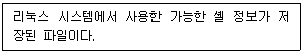
- /bin/bash
- /etc/shells
- /etc/passwd
- /etc/shadow
(정답률: 80%)
33. 다음 중 가장 먼저 등장한 셸로 알맞은 것은?
- Bourne Shell
- C Shell
- Korn Shell
- Bash
(정답률: 73%)
34. 다음 중 선언된 셸 변수를 전부 확인할 때 사용하는 명령으로 알맞은 것은?
- set
- env
- chsh
- export
(정답률: 62%)
35. 다음 중 명령행에서 역슬래시(∖)를 사용하여 나타나는 2차 프롬포트를 변경하려고 할 때 사용하는 환경 변수로 알맞은 것은?
- PS
- PS1
- PS2
- PROMPT
(정답률: 69%)
36. 다음 설명에 해당하는 셸의 기능으로 알맞은 것은?
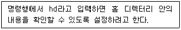
- 명령행 완성 기능
- 앨리어스(Alias) 기능
- 히스토리(history) 기능
- 명령행 편집 기능
(정답률: 80%)
37. 다음 설명에 해당하는 파일명으로 가장 알맞은 것은?
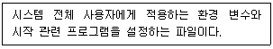
- /etc/profile
- /etc/bash_profile
- /etc/bashrc
- ~/.bash_profile
(정답률: 53%)
38. 다음 설명에 해당하는 셸로 알맞은 것은?
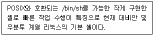
- ksh
- bash
- dash
- tcsh
(정답률: 51%)
39. 다음 중 파일이나 디렉터리에 부여된 소유권의 값을 확인하는 명령으로 알맞은 것은?
- chmod
- chown
- umask
- ls
(정답률: 57%)
40. 다음 중 파티션 단위로 남아 있는 디스크의 용량을 확인하는 명령으로 알맞은 것은?
- df
- du
- free
- edquota
(정답률: 74%)
41. 다음 중 디스크에 부여된 UUID 값을 확인하는 명령으로 알맞은 것은?
- mount
- df
- du
- blkid
(정답률: 74%)
42. 다음 중 파일에 부여되는 쓰기 권한(w: write)에 대한 설명으로 가장 알맞은 것은?
- 파일을 삭제할 수 있는 권한이다.
- 파일의 내용을 볼 수 있는 권한이다.
- 파일의 내용을 수정할 수 있는 권한이다.
- 실행 파일로 바꿀 수 있는 권한이다.
(정답률: 87%)
43. 다음은 data라는 디렉터리를 포함해서 하위 디렉터리 및 파일의 소유권을 ihduser로 변경하는 과정이다. ( 괄호 ) 안에 들어갈 명령 및 옵션으로 알맞은 것은?
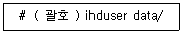
- chmod -r
- chmod -R
- chown -r
- chown –R
(정답률: 65%)
44. 다음 그림에 해당하는 명령으로 알맞은 것은?
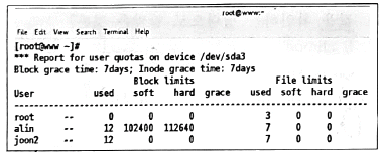
- quota
- edquota
- repquota
- setquota
(정답률: 42%)
45. 특정 파티션에 실행 파일이 실행되지 않도록 /etc/fstab 파일에 noexec 설정을 할 때 등록해야 하는 필드(field)로 알맞은 것은?
- 2번째 필드
- 3번째 필드
- 4번째 필드
- 5번째 필드
(정답률: 46%)
46. 다음은 관련 정보 변경 후에 다시 마운트하는 과정이다. ( 괄호 ) 안에 들어갈 내용으로 알맞은 것은?
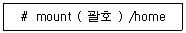
- -o loop
- -t loop
- -o remount
- -t remount
(정답률: 60%)
47. 다음은 CentOS 7에서 사용되는 XFS 파일 시스템 점검하는 과정이다. ( 괄호 ) 안에 들어갈 명령 및 옵션으로 알맞은 것은?
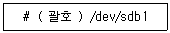
- fsck –t xfs
- e2fsck –t xfs
- xfs.fsck
- xfs_repair
(정답률: 45%)
48. 다음 중 특정 디렉터리를 공유 디렉터리로 사용할 때 설정해야 할 내용으로 가장 알맞은 것은?
- 공유 디렉터리에 Set-UID를 지정한다.
- 공유 디렉터리에 Set-GID를 지정한다.
- 공유 디렉터리에 Sticky-Bit를 지정한다.
- 공유 디렉터리에 UUID를 지정한다.
(정답률: 64%)
2과목: 리눅스 활용
49. 다음 중 리눅스 커널 기반의 운영체제로 틀린 것은?
- webOS
- Tizen
- QNX
- GENIVI
(정답률: 59%)
50. 다음 설명에 해당하는 명칭으로 알맞은 것은?
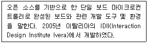
- 아두이노(Arduino)
- 라즈베리 파이(Raspberry Pi)
- 마이크로비트(Microbit)
- 큐비 보드(Cubie Board)
(정답률: 74%)
51. 다음 그림에 해당하는 명칭으로 알맞은 것은?
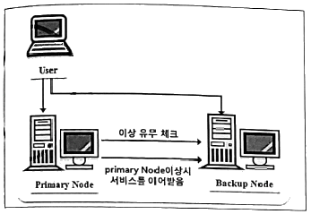
- 서버 가상화
- 컨테이너 기술
- HA(High Availability) 클러스터
- HPC(High Performance Computing) 클러스터
(정답률: 73%)
52. 다음 설명에 해당하는 프로그램으로 알맞은 것은?
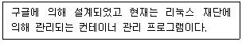
- Docker
- Ansible
- OpenStack
- Kubernetes
(정답률: 45%)
53. 다음 중 OSI 7계층 모델에서 물리 계층의 데이터 전송 단위로 알맞은 것은?
- bit
- frame
- packet
- segment
(정답률: 76%)
54. 다음 중 리눅스와 윈도우 시스템 간의 자료 공유를 위해 사용되는 인터넷 서비스로 가장 알맞은 것은?
- SSH
- SAMBA
- NFS
- IRC
(정답률: 73%)
55. 다음 중 잘 알려진 포트(Well-Known Port)의 범위로 알맞은 것은?
- 0 ~ 1023
- 1024 ~ 8080
- 8081 ~ 35535
- 35536 ~ 65535
(정답률: 77%)
56. 다음 중 FTP에 대한 설명으로 틀린 것은?
- Active 모드와 Passive 모드를 지원한다.
- 익명의 계정(Anonymous)을 이용하여 접속할 수 있다.
- FTP를 사용하기 위해서는 FTP 서버가 반드시 필요하다.
- 1984년 썬 마이크로시스템즈 사에서 개발한 프로토콜이다.
(정답률: 53%)
57. 다음 중 로컬 네트워크상에 있는 다른 시스템의 MAC 주소를 확인할 때 사용하는 명령으로 알맞은 것은?
- mii-tool
- arp
- ifconfig
- ss
(정답률: 70%)
58. 다음 중 LAN 및 MAN 관련 표준을 제정한 기관으로 알맞은 것은?
- ISO
- ANSI
- ITU
- IEEE
(정답률: 75%)
59. 다음 중 POP3 포트 번호로 알맞은 것은?
- 20
- 25
- 53
- 110
(정답률: 67%)
60. 다음 중 SSH에 대한 설명으로 틀린 것은?
- 원격 셸 기능 지원
- 안전한 파일 전송 지원
- 패킷 암호화 원격 로그인 지원
- 평문 전송 기능 지원
(정답률: 75%)
61. 다음 중 네트워크 인터페이스의 물리적 연결 여부를 확인할 수 있는 명령어로 가장 알맞은 것은?
- arp
- ifconfig
- ethtool
- ss
(정답률: 71%)
62. 다음 중 허브(HUB)와 PC 연결과 같이 일반적인 연결에 사용하는 UTP 케이블 배열로 알맞은 것은?
- 흰녹, 녹, 흰주, 파, 주, 흰파, 흰갈, 갈
- 흰주, 주, 흰녹, 파, 흰파, 녹, 흰갈, 갈
- 흰주, 주, 흰녹, 녹, 파, 흰파, 흰갈, 갈
- 흰녹, 녹, 흰주, 파, 흰파, 주, 흰갈, 갈
(정답률: 68%)
63. 다음 중 프로토콜의 기본 구성 요소 3가지로 틀린 것은?
- 구문
- 순서
- 소켓
- 의미
(정답률: 75%)
64. 다음 설명에 해당하는 파일로 가장 알맞은 것은?
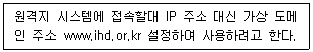
- /etc/resolv/conf
- /etc/services
- /etc/sysconfig/network-scripts
- /etc/hosts
(정답률: 58%)
65. 다음 중 IPv6의 주소 표현의 단위로 알맞은 것은?
- 16bit
- 32bit
- 64bit
- 128bit
(정답률: 77%)
66. 다음 중 IPv6의 특징으로 틀린 것은?
- 흐름 제어 기능 지원
- 호스트 주소 자동 설정
- 인증 및 보안 기능
- 헤더 구조 복잡성
(정답률: 69%)
67. 다음 중 TCP의 3-way handshaking에서 수행하는 패킷의 순서로 알맞은 것은?
- SYN → ACK → SYN/ACK
- ACK → SYN/ACK → SYN
- ACK → SYN → SYN/ACK
- SYN → SYN/ACK → ACK
(정답률: 70%)
68. 다음 중 UTP 케이블 카테고리(Category) 5e의 최대 전송속도로 가장 알맞은 것은?
- 10 Mbps
- 64 Mbps
- 100 Mbps
- 1 Gbps
(정답률: 57%)
69. 다음 중 OSI 7계층 모델을 하위 계층부터 나열한 순서로 알맞은 것은?
- 물리 → 데이터링크 → 네트워크 → 전송 → 세션 → 표현 → 응용
- 물리 → 네트워크 → 전송 → 데이터링크 → 세션 → 응용 → 표현
- 응용 → 표현 → 세션 → 전송 → 네트워크 → 데이터링크 → 물리
- 응용 → 세션 → 표현 → 전송 → 네트워크 → 데이터링크 → 물리
(정답률: 85%)
70. 다음 중 OSI 7계층 모델 중 세션 계층의 전송단위로 가장 알맞은 것은?
- data
- packet
- bit
- frame
(정답률: 64%)
71. 다음 중 IPv4의 C 클래스 대역에 대한 설명으로 알맞은 것은?
- IP 주소 첫 번째 부분의 2비트가 10인 경우이다.
- IP 주소 첫 번째 부분의 2비트가 11인 경우이다.
- IP 주소 첫 번째 부분의 4비트가 1110인 경우이다.
- IP 주소 첫 번째 부분의 3비트가 110인 경우이다.
(정답률: 65%)
72. 다음 중 게이트웨이 주소값을 설정하는 명령어로 알맞은 것은?
- route add –net 192.168.10.1
- route add net 192.168.10.1
- route add default gw 192.168.10.1
- route add default –gw 192.168.10.1
(정답률: 66%)
73. 다음 중 PDF 문서 뷰어 프로그램으로 알맞은 것은?
- Eog
- Evince
- Gimp
- Gwenview
(정답률: 45%)
74. 다음 중 워드 프로세서(Word Processor) 프로그램으로 알맞은 것은?
- LibreOffice Writer
- LibreOffice Draw
- LibreOffice Calc
- LibreOffice Impress
(정답률: 79%)
75. 다음 중 KDE와 가장 관련이 깊은 라이브러리로 알맞은 것은?
- Qt
- GRK+
- Xlib
- XCB
(정답률: 61%)
76. 다음 중 KDE에서 제공하는 이미지 뷰어 프로그램으로 알맞은 것은?
- Eog
- ImageMagicK
- Gimp
- Gwenview
(정답률: 36%)
77. 다음 중 X 서버에 IP 주소가 192.168.5.13 인 X 클라이언트의 접근을 허가하는 명령어로 알맞은 것은?
- xhost + 192.168.5.13
- xhost add 192.168.5.13
- xauth + 192.168.5.13
- xauth add 192.168.5.13
(정답률: 52%)
78. 다음 설명에 해당하는 용어로 알맞은 것은?
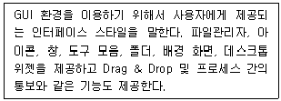
- 데스크톱 환경
- 윈도 매니저
- 디스플레이 매니저
- 유저 인터페이스
(정답률: 54%)
79. 다음 중 윈도 매니저의 종류로 알맞은 것은?
- Xfce
- GNOME
- Kwin
- LXDE
(정답률: 42%)
80. 다음 중 시스템 시작 시 X 윈도 모드로 부팅이 되도록 설정하는 명령은?
- systemctl runlevel.5
- systemctl graphic.target
- systemctl set-default runlevel5
- systemctl set-default graphic.target
(정답률: 64%)
이유: lpstat은 "line printer status"의 약자로, 프린터 큐의 상태를 출력하는 명령어이다. lp는 프린터에 출력 작업을 보내는 명령어이고, lpr은 파일을 프린터에 보내는 명령어이며, lpc는 프린터 서비스를 관리하는 명령어이다. 따라서, 프린터 큐의 상태를 출력하는 명령어는 lpstat이다.